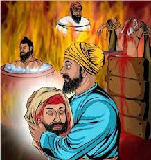
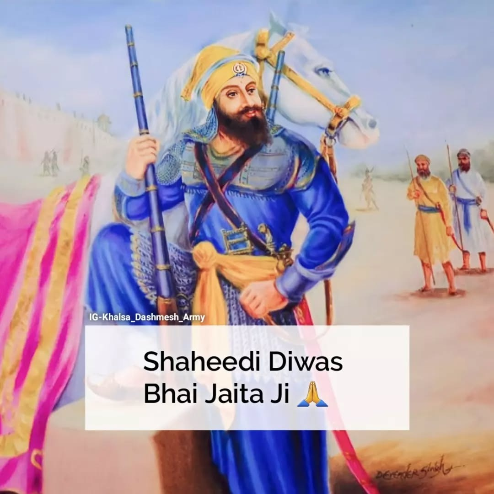

Early Life-Bhai Jaita Ji
Bhai Jaita Ji was born on 13th December 1649 to Premo and Sada Nand Ji. He grew up with bravery, compassion, and devotion, earning the title “Ranghareta Guru Ka Beta,” meaning Guru’s own son. In December 1665, he accompanied Guru Tegh Bahadur Ji on his third missionary journey to Assam, spreading the message of Sikhism and humanity.

Bravery in 1675
In 1675, when Guru Tegh Bahadur Ji was martyred in Delhi, Bhai Jaita Ji risked his life to carry the severed head of Guru Tegh Bahadur Ji from Delhi to Anandpur Sahib. Traveling over 300 kms through forests and navigating by stars, he reached Guru Gobind Singh Ji safely, ensuring the Guru’s head was respectfully cremated. This act of supreme bravery immortalized him in Sikh history.

Becomes Bhai Jiwan Singh Ji
On Vaisakhi 1699, Bhai Jaita Ji took Amrit and became Bhai Jiwan Singh Ji. He fought alongside Guru Gobind Singh Ji in several battles, including the Battle of Bhangani, Nadaun, and Anandpur Sahib. His unmatched courage in rescuing Sahibzada Ajit Singh Ji during the Battle of Sirsa highlighted his fearless spirit.

Martyrdom at Chamkaur Sahib-Bhai Jaita Ji
On 23rd December 1704, Bhai Jiwan Singh Ji attained martyrdom during the Battle of Chamkaur Sahib. Fighting with unmatched valor, he embodied Guru Ji’s words: “Sawa Lakh Se Ek Lraaun” — one Sikh can face 125,000 opponents. He fought till his last breath, becoming an eternal inspiration of Sikh courage and sacrifice. Alongside his warrior spirit, he was also a poet, and his work “Sri Gur Katha” remains a significant contribution to Sikh literature.
Back